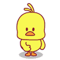
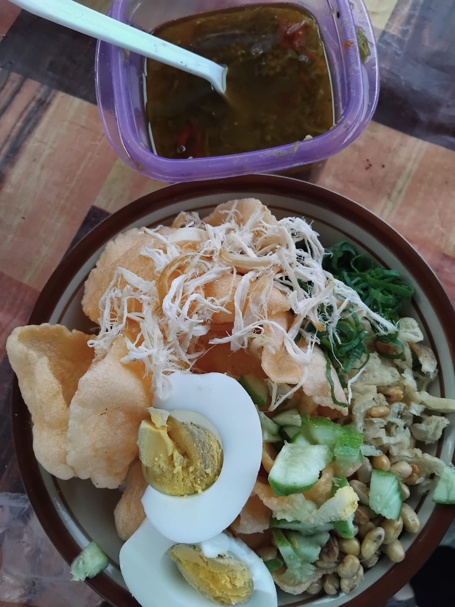
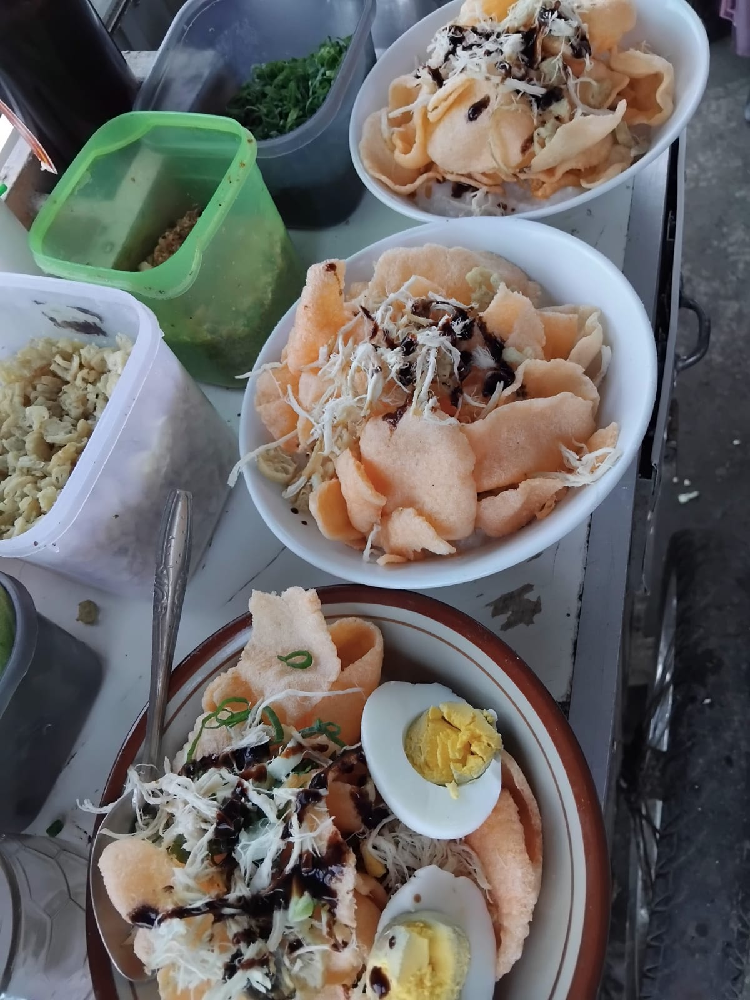
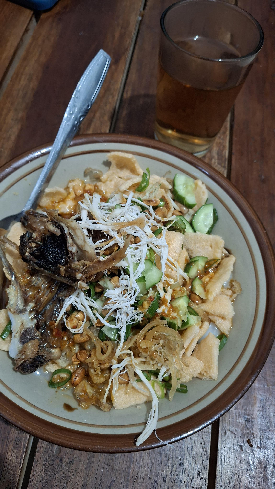

Sajian bubur ayam khas Tasikmalaya yang hangat, gurih, dan menyelimuti. Diracik dengan resep turun-temurun untuk memulai hari Anda dengan penuh semangat.
Cerita Kami
Bubur Ayam Bu Dede hadir sejak puluhan tahun lalu, menghadirkan kelezatan bubur ayam dengan kuah gurih yang menghangatkan jiwa. Setiap mangkuk disajikan dengan penuh cinta dan perhatian pada detail rasa.
Dari nasi bubur yang lembut hingga topping ayam suwir yang melimpah, setiap gigitan adalah pengalaman sarapan yang sesungguhnya. Bukan sekadar makan, tapi tradisi pagi yang selalu dirindukan.

Galeri
Lihat kelezatan Bubur Ayam Bu Dede yang siap menghangatkan pagi Anda.


Keunggulan
Tiga alasan utama pelanggan selalu kembali setiap pagi.
Tak terlalu sedikit, tak terlalu banyak. Ukuran yang pas untuk mengenyangkan perut di pagi hari tanpa rasa kelebihan.
Ayam suwir, cakwe, kacang tanah, bawang goreng, dan kuah gurih yang melimpah di setiap mangkuk tanpa terkecuali.
Diracik dari bumbu alami pilihan tanpa bahan pengawet. Rasa gurih yang khas dan alami menjadikan setiap suapan terasa istimewa.
Lokasi
Kunjungi gerai kami dan nikmati kehangatan Bubur Ayam Bu Dede langsung di tempat.
Bantarhuni Rt02/Rw08, Mulyasari, Tamansari, Kota Tasikmalaya
Buka Setiap Pagi sampai Habis
Kontak Kami
Hubungi Bu Dede langsung via WhatsApp untuk pemesanan dalam jumlah besar, catering acara, atau sekadar menanyakan informasi lebih lanjut.
Hubungi Bu Dede via WhatsApp